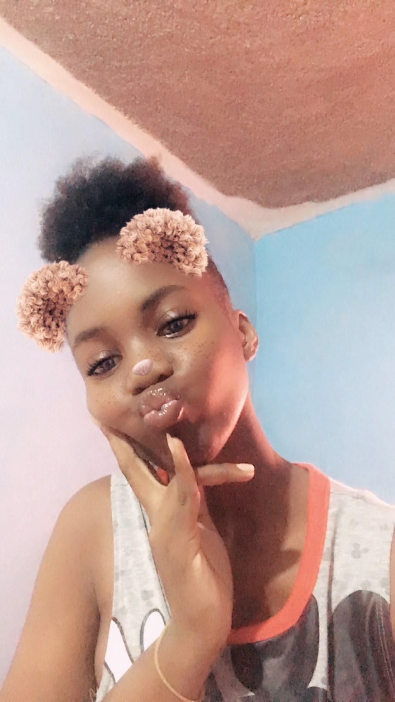

MA VIE first post
September 29, 2023 by Kimberly Pecco
As my 20th birthday approaches on October 7th, I'm filled with excitement and anticipation. Over the past 19 years, I've embarked on a journey of exploration and self-discovery. One of my enduring passions is my love for the world of cinema and television, where well-crafted stories transport me to different realms and inspire me. Beyond entertainment, I have an insatiable thirst for knowledge, constantly seeking to understand new concepts. I'm currently immersed in the captivating adventures of "Eminence in Shadow," an isekai anime that mirrors my own journey of self-discovery. Turkish dramas have also found a special place in my heart. Looking ahead, my ambition is to become a cyber analyst, delving into the mysteries of the digital realm, safeguarding networks, and contributing to the ever-evolving landscape of cybersecurity. This dynamic field aligns perfectly with my passion for technology and problem-solving. The prospect of contributing to this dynamic field, fueled by my passion for technology and problem-solving, is a thrilling adventure I'm eager to embark on.
As I navigate the twists and turns of life, these passions are my compass, guiding me toward a future that promises excitement, growth, and the fulfillment of dreams.